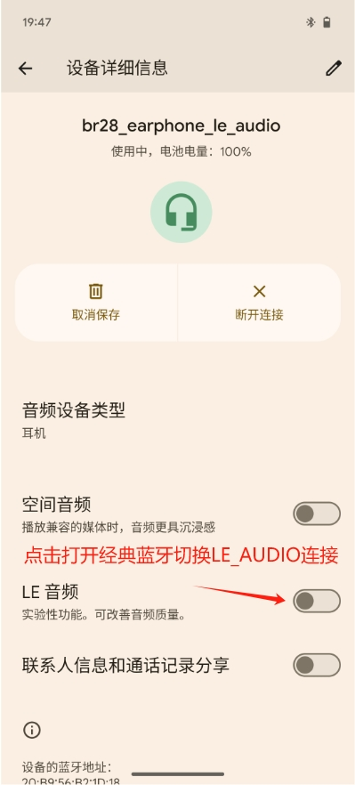
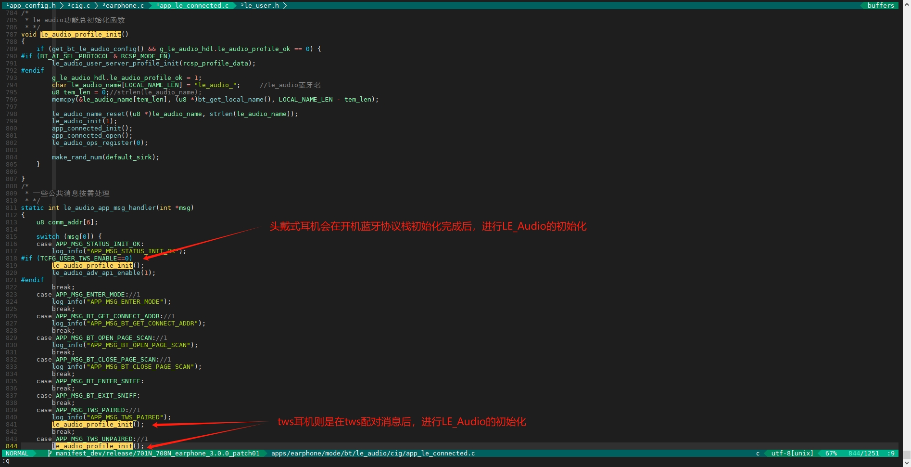
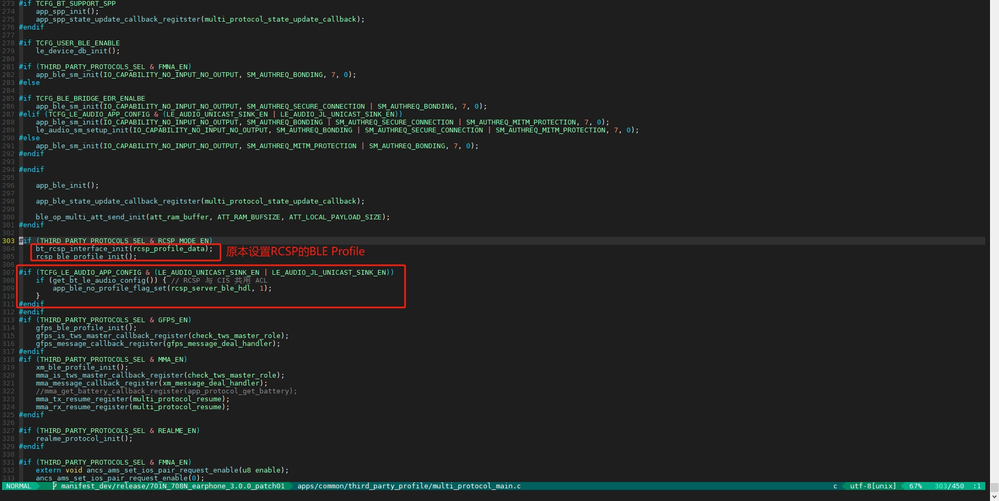
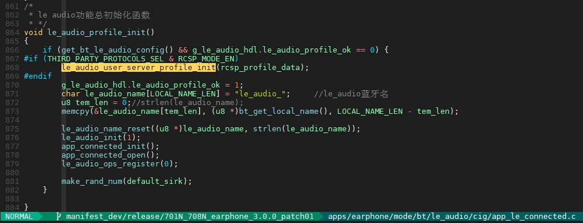
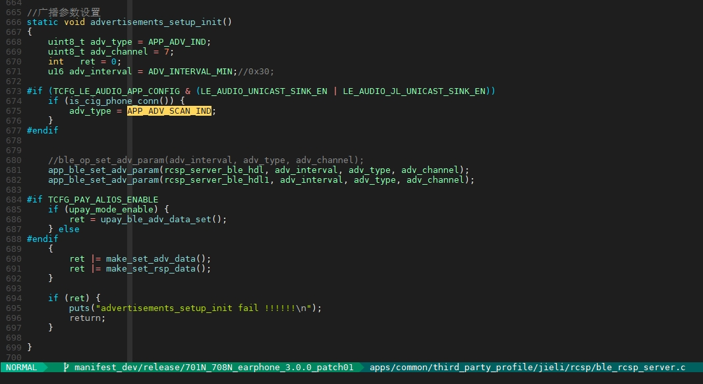
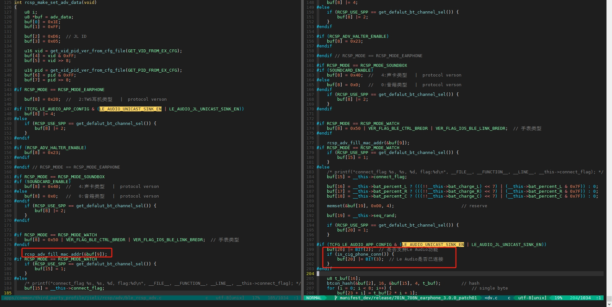
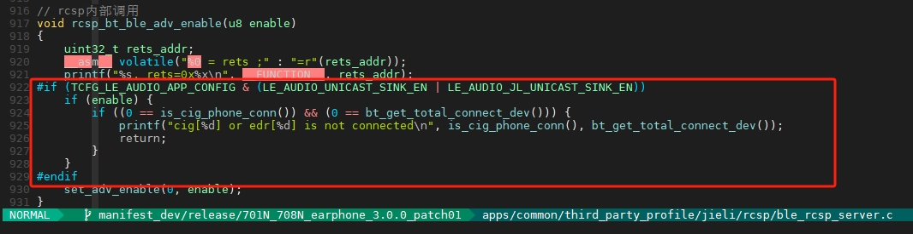
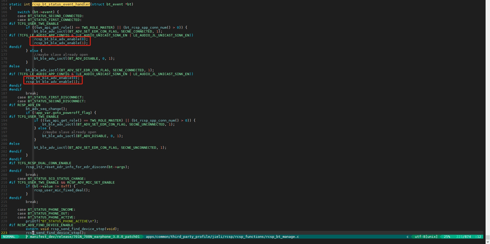
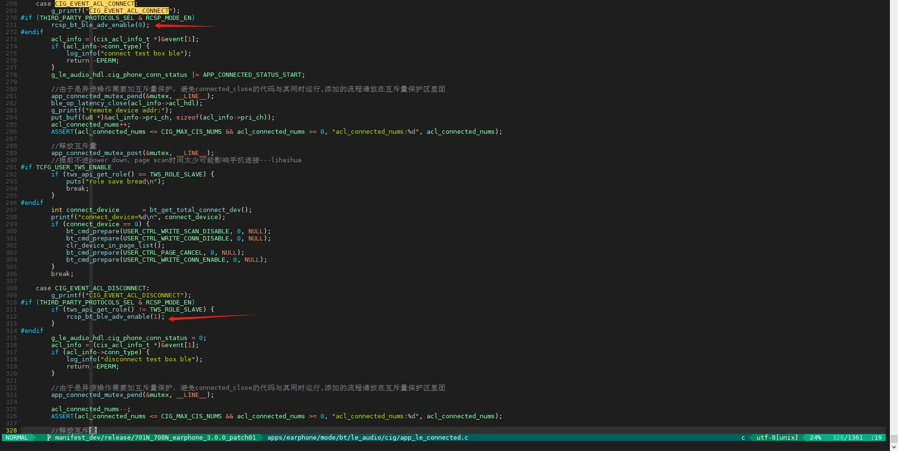
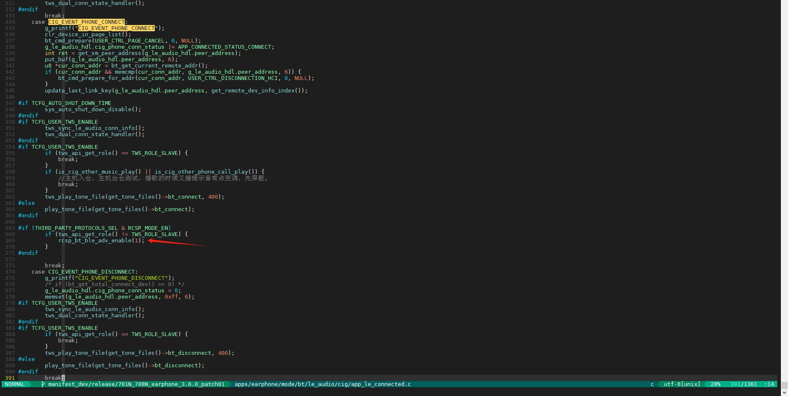

18.1. LE_AUDIO_UNICAST_SINK(edr_1+cis_1)开发说明
产品形态：双模蓝牙耳机，双模蓝牙音箱
18.1.1. 可视化工具开启LE_AUDIO_UNICAST_SINK功能
- 开启BLE相关开关，LE_AUDIO配置选择LE_AUDIO_UNICAST_SINK_EN。注：开启后设备同一时间仅支持连接一台手机。


- “蓝牙音乐”或“媒体”导航栏处的音频流程图选择LE_Audio流程图

- “蓝牙通话”导航栏处的音频流程图选择LE_Audio流程图

- “LE_Audio”导航栏处的音频流程图使能，并导出配置

18.1.2. 手机双模连接使用流程说明

手机切换：如上图，支持LE_Audio的手机连接设备，连接上只有单模连接状态存在：即单次只存在“经典蓝牙”或者“LE_Audio音频”链路，经典蓝牙和LE_Audio通过手机界面进行切换连接。
初始化流程：初始化状态开启edr可发现和可连接+ble的广播adv，ble的广播字段带有LE_Audio profile相关信息说明支持LE_Audio连接；手机搜索界面edr和LE_Audio的设备名字会根据切换进行显示。
连接流程：切换到LE_Audio开关时，会先断开经典蓝牙，再连接ble acl链路，手机播歌建立单向cis，通话会重新更新新的参数建立双向cis链路。
手机APP交互：当手机与耳机建立LE_Audio连接后，耳机会发送不可连接的ble广播通知手机APP当前耳机已经连接LE_Audio，如果手机APP判断到已经连接耳机的LE_Audio，手机APP将通过当前已连接的LE_Audio acl链路进行APP协议通信。更多细节见下面章节：《第三方协议与LE_Audio共用BLE ACL链路》
18.1.3. LE_AUDIO_UNICAST_SINK参数规格:
Bluetooth: 支持蓝牙cis+ACL 双工传输
代码量：251kb
Codec: LC3编码器（RAM13.3K）， LC3解码器（RAM13.1K），播歌（48k）；通话：上行（32k（默认）/16k） 、下行（32k（默认）/16k）
MIPS：LC3解码：20MHz（64kbps）、40MHz（80kbps），LC3编码：40-50MHz
Algorithm: 音频同步，变采样
18.1.4. LE_Audio开发接口说明
18.1.4.1. LE_Audio协议栈初始化

18.1.4.2. LE_Audio消息事件处理
app_le_connected.c的static int app_connected_conn_status_event_handler(int *msg)，如：ACL/手机连接成功，ACL/手机断开消息，LE_Audio播歌/通话消息等。
typedef enum {
...
CIG_EVENT_PERIP_CONNECT, // 播歌/通话 Receiver connect succ.
CIG_EVENT_PERIP_DISCONNECT, // 播歌/通话 Receiver disconnect.
...
CIG_EVENT_ACL_CONNECT, // 手机ACL链路建立连接
CIG_EVENT_ACL_DISCONNECT, // 手机ACL链路断开连接
CIG_EVENT_PHONE_CONNECT, // 手机建立连接
CIG_EVENT_PHONE_DISCONNECT, // 手机断开连接
} CIG_EVENT;
/**
* @brief CIG连接状态事件处理函数
*
* @param msg:状态事件附带的返回参数CIG_EVENT
*
* @return
*/
static int app_connected_conn_status_event_handler(int *msg)
{
// 函数实体一般不需要用户修改，仅供了解
}
18.1.4.3. LE_Audio播歌通话cis建立打开解码器编码器以及收数相关接口
// apps/common/le_audio/cig/le_connected.c
// 以下函数实体一般不需要客户修改，仅供了解
/**
* @brief CIG从机连接成功处理事件
* 在这里进行打开解码器等相关流程
*
* @param priv:连接成功附带的句柄参数
*
* @return 是否执行成功 -- 0为成功，其他为失败
*/
int connected_perip_connect_deal(void *priv);
/**
* @brief CIG从机连接断开成功处理接口口
* 在这里进行关闭解码器等相关流程
*
* @param priv:断链成功附带的句柄参数
*
* @return 是否执行成功 -- 0为成功，其他为失败
*/
int connected_perip_disconnect_deal(void *priv);
/**
* @brief CIS通道收到数据回连到上层处理
* 音频流cis收数接口
*/
static void connected_iso_callback(const void *const buf, size_t length, void *priv);
/**
* @brief CIS通道发送数据接口
* 音频流cis发数接口
*/
static int connected_tx_align_data_handler(u8 cig_hdl);
注：其余更多接口使用说明，详细见app_le_connected.h/.c和le_connected.h/.c
18.1.5. 第三方协议与LE_Audio共用BLE ACL链路
由于某些平台限制，所以第三方协议需要与LE_Audio共用一条BLE ACL链路，下面将以RCSP协议为例介绍第三方协议的开发流程。
18.1.5.1. （1）设置RCSP BLE句柄的no profile flag属性为 1
no profile flag的意思就是这个BLE链路允许没有自己单独的GATT服务表。
当LE_Audio的BLE链路连接上并通信时，RCSP的BLE链路也会收到同样BLE connection handle的连接事件和数据交互。所以需要在LE_Audio的GATT服务表基础上，加上RCSP的ATT HANDLE列表。

注意：当手机直接通过RCSP的BLE句柄广播连接时，就可以正常访问RCSP BLE句柄通过app_ble_profile_set 函数设置的GATT服务表，也就是说，对于不支持LE audio的手机，RCSP的功能和流程实际是不受影响的。
18.1.5.2. （2）LE_Audio的GATT服务表加上RCSP的GATT服务

18.1.5.3. （3）RCSP与LE_Audio共用BLE ACL时，RCSP需使用与EDR地址不同BLE地址
18.1.5.4. （4）RCSP的广播包格式
因为RCSP需要和LE_Audio共用一条ACL链路，所以当LE_Audio的BLE链路连接后，RCSP的广播包需要设置为不可连接类型，不能被手机连接。并且RCSP的广播广播包增加一个字段，告知手机APP当前耳机的LE_Audio链路的状态和BLE地址。手机APP如果通过广播包识别到LE_Audio链路已经连接，则需要查询手机是否已经连接对应的BLE链路，如果已连接，则将RCSP的数据交互通过这个已经连接的BLE链路去通信；如果未连接，则按RCSP的默认流程连接通信。
广播包字段需要增加LE_Audio链路地址，LE_Audio连接状态两个信息。
18.1.5.4.1. 如果LE_Audio已经连接，RCSP需要改为不可连接广播

18.1.5.4.2. 广播字段增加LE_Audio连接状态和LE_Audio连接地址（即经典蓝牙地址）（广播包内容可以用户自定义）

18.1.5.4.3. 开关广播的时机
RCSP需要放到手机连接经典蓝牙后，或手机连接LE_Audio后再开广播，由手机用户决定先连哪个链路。

经典蓝牙连上后再开RCSP广播

LE_Audio ACL连上后关闭RCSP广播（因为只能连一条ACL，需要确实是否是LE_Audio协议连接再开RCSP广播），LE_Audio ACL断开后开启RCSP广播

LE_Audio协议连接后开启RCSP广播（因为只能连一条ACL，确认是LE_Audio协议连接再开RCSP不可连接广播）

18.1.6. LE_AUDIO_UNICAST_SINK手机兼容性已知问题汇总：
1、tws耳机进出仓，谷歌piexl8会偶现不主动回连出仓耳机的情况；
2、谷歌piexl8连接上设备不会主动同步音量（但piexl7是可以的，有可能与手机系统相关）。